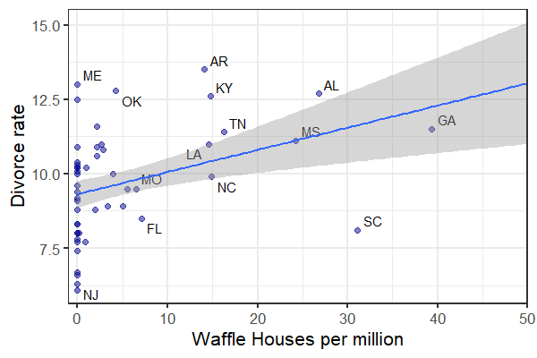
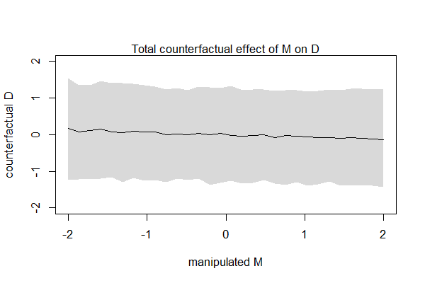

Many Variables (Part 1)
EES 5891-03
Bayesian Statistical Methods
Jonathan Gilligan
Class #6: Tuesday, September 13 2022
Multiple Regression
Multiple Regression
- Single Regression:
- Dependent variable depends on one indpendent (predictor) variable
- Multiple Regression:
- Dependent variable depends on multiple independent variables.
- Why?
- Statistical controls for counfounding effects
- On average, men are taller than women
- Studies of how income correlates with height should control for sex.
- Multiple causes and complex causation
- Earth’s temperature depends on
- Greenhouse gas concentrations
- Albedo (reflection of sunlight)
- Brightness of the sun
- Earth’s temperature depends on
- Interactions (Chapter 8)
- Smoking increases risk of lung cancer
- Exposure to radon increases risk of lung cancer
- The increase is much greater among smokers
- Statistical controls for counfounding effects
Spurious Association

Standardize Data
- Model \[ \begin{align} D_i &\sim \text{Normal}(\mu_i, \sigma) \\ \mu_i &= \alpha + \beta_A A_i \\ \alpha &\sim \text{Normal}(0, 0.2) \\ \beta_A &\sim \text{Normal}(0, 0.5) \\ \sigma &\sim \text{Exponential}(1) \end{align} \]
Caustal Relationships
- Think before you regress
The pattern we see here is typical when one variable influences the dependent variable and also the other independent variable.
-
Two possible causal relationships
Which is it?
Testable Implications
-
What are the possible testable implications of these DAGs?
-
Conditional independencies:
- Which variables should be associated in the data?
- Which variables become dis-associated when we condition on another set of variables
- Conditioning: Y is independent of X, conditioned on Z (\(Y \indep X | Z\)) if X doesn’t give us any additional information about Y when we already know Z.
- Left DAG: There shouldn’t be any independence among D, A, and M.
- Right DAG: \(D \indep M | A\).
Multiple Regression Models
Multiple Regression Notation
\[ \begin{align} D_i &\sim \text{Normal}(\mu_i, \sigma) \\ \mu_i &= \alpha + \beta_M M_i + \beta_A A_i \\ \alpha &\sim \text{Normal}(0,0.2) \\ \beta_M &\sim \text{Normal}(0,0.5) \\ \beta_A &\sim \text{Normal}(0,0.5) \\ \sigma &\sim \text{Exponential}(1) \\ \end{align} \]
Comparing Models
- In the multiple-regression model, bM is
consistent with zero:
- If we know the median age A,
- no additional information is gained from knowing the marriage rate M. \[D \indep M | A\]
Diagnostic Posterior Plots
Diagnostic Posterior Plots
- We can also learn from plotting the posterior in different ways.
-
Predictor residual plots: Data versus residual
predictor values.
- These are only useful for understanding the model itself.
-
Posterior prediction plots: Predictions versus raw
data.
- Useful for checking how well the model fits the data.
- Don’t tell us about causal relationships.
-
Counterfactual plots: Implied predictions for
imaginary experiments.
- Useful for exploring causal implications.
-
Predictor residual plots: Data versus residual
predictor values.
Predictor Residual Plots
- Predict M from A
library(ggrepel)
mdl_MA <- quap(
alist(
M ~ dnorm(mu, sigma),
mu <- a + b * A,
a ~ dnorm(0, 0.2),
b ~ dnorm(0, 0.5),
sigma ~ dexp(1)
), data = d
)new_data <- select(d, D, A, M, Loc)
notable_states <- c("WY", "ND", "ME", "HI", "DC")
post <- linpred_draws(mdl_MA, new_data,
value = "mu", ndraws = 100) %>%
group_by(Loc, D, A, M) %>% summarize(estimate = mean(mu)) %>%
ungroup()- New function
left_join(alsoright_join,inner_join,full_join):- Take 2 data frames and match the rows using a shared column.
- Combine the other columns for the matching rows.
- This aligns
estimatewithDfor the sameA.
library(ggrepel)
ggplot(post, aes(x = A, y = M)) +
geom_point(size = 3, color = "darkblue", alpha = 0.5) +
geom_line(aes(y = estimate), size = 1, color = "black") +
geom_segment(aes(xend = A, yend = estimate), size = 0.25,
color = "gray40") +
geom_text_repel(data = . %>% filter(Loc %in% notable_states),
aes(label = Loc), size = 3, nudge_x = 0.01, nudge_y = 0.05) +
labs(x = "Age at marriage (std)", y = "Marriage rate (std)") +
theme_bw(base_size = 15) +
theme(panel.grid = element_blank())
More Residual Plots
d2 <- post %>% mutate(resid = M - estimate)
mdl_resid <- quap(
alist(
D ~ dnorm(mu, sigma),
mu <- a + b_res * resid,
a ~ dnorm(0, 0.2),
b_res ~ dnorm(0, 0.5),
sigma ~ dexp(1)
), data = d2
)post <- linpred_draws(mdl_resid, select(d2, resid),
ndraws = 1000, value = "estimate") %>%
group_by(resid) %>%
summarize(mean = mean(estimate),
lower = quantile(estimate, 0.055),
upper = quantile(estimate, 0.945)) %>%
ungroup()
ggplot(d2, aes(x = resid, y = D)) +
geom_point(size = 3, alpha = 0.5, color = "darkblue") +
geom_smooth(aes(y = mean, ymax = upper, ymin = lower),
data = post, stat = "Identity", color = "black",
size = 1, fill = "gray50") +
geom_vline(xintercept = 0, size = 1, linetype = "dashed") +
labs(x = "Marriage rate residuals", y = "Divorce rate (std)")- Look for structre in the residuals.
- Is the trend line consistent with being flat?
- Is there evident curvature in the data points?
Posterior Predictive Plots
- How well does the posterior distribution match the data?
- When the model fails, how does it fail?
- Notice that I use
linpred_draws(equivalent tolink), notpredicted draws(equivalent toextract.samples)
mu <- linpred_draws(mdl_multi, select(d, D, A, M, Loc),
ndraws = 1000, value = "mu")
d2 <- mu %>% group_by(Loc, D, A, M) %>%
summarize(estimate = mean(mu), lower = quantile(mu, 0.055),
upper = quantile(mu, 0.975)) %>% ungroup()
notable_states <- c("ID", "UT", "RI", "ME")
ggplot(d2, aes(x = D, y = estimate,
ymax = upper, ymin = lower)) +
geom_pointrange(size = 1, color = "darkblue", alpha = 0.5) +
geom_text_repel(data = . %>% filter(Loc %in% notable_states),
aes(label = Loc), size = 5) +
geom_abline(slope = 1, intercept = 0, color = "black",
linetype = "dashed") +
labs(x = "Observed divorce rate",
y = "Predicted divorce")Counterfactural Models
Counterfactural Models
-
Counterfactual models:
- Explore what the model would look like with data ve ry different to what you actually observe.
- What happens if no one gets married before they’re 35?
-
Process:
- Pick a variable to manipulate (the intervention variable)
- Define a range of values for it
- For each value, use the causal model to simulate values for other variables.
-
Simulate the causal model where A influences M and D and M also influences D.
Manipulating the Counterfactual Model
sim_dat <- data.frame(A = seq(-2, 2, length.out = 30))
s <- sim(mdl_cf, data = sim_dat, vars = c("M", "D"))
plot(sim_dat$A, colMeans(s$D), ylim = c(-2,2), type = "l",
xlab = "manipulated A", ylab = "counterfactual D")
shade(apply(s$D, 2, PI), sim_dat$A)
mtext( "Total counterfactual effect of A on D")More Counterfactual Manipulations

sim_dat <- data.frame(M = seq(-2, 2, length.out = 30), A = 0)
s <- sim(mdl_cf, data = sim_dat, vars = c("M", "D"))
plot(sim_dat$M, colMeans(s$D), ylim = c(-2,2), type = "l",
xlab = "manipulated M", ylab = "counterfactual D")
shade(apply(s$D, 2, PI), sim_dat$A)
mtext( "Total counterfactual effect of M on D")